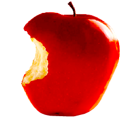

CRON-O-Meter
CRON-O-Meter is free, open source, and cross-platform
dieting software.
CR (Calorie Reduced) diets require a lot of information to perform optimally.
In order to restrict caloric intake, but remain healthy, users of the diet must
track their vitamin, mineral, and protein intakes with great care.
We aim to provide a complete solution to the CR dieter. Current open-source diet-tracking
applications fall short in some vital respects. Either they are not detailed enough,
or they suffer from critical usability flaws. We believe that a diet tracker must be
effortless to operate for the activity for which it will be used most of the time,
keeping track of the foods eaten in a particular meal.
To this end, we are developing CRON-O-Meter, an application that will take into account
good usability design and dense functionality. It will provide diet advice, track
consumption and exercise, and generally assist in all aspects of a CR diet.
Features
- Includes nutritional information on over 7000 foods from the latest USDA sr19 datasources.
- Food editor for creating custom foods.
- Recipe editor to create new foods built from sets of other foods
- Import and export foods and recipes to share with other users
- Set personal targets for each nutrient, or use the official DRIs
- Track and chart your biometrics (weight, blood pressure, temperature, etc...).
- Generate detailed reports on your nutritional information
What's new in Version 0.9.3?
- Updated to USDA sr20, which includes many new foods and more values for Choline.
- Fixed Search Focus Bug in Max OS 10.5 (Leopard)
- Ability to track multiple users at once, includes the copying servings between
users and common recipes.
What's new in Version 0.9?
- Improvements to data entry
- The derived Omega-3 and Omega-6 are now more accurate than in previous versions.
- Vitamin E's %DV was previously incorrect (was 30 mg instead of 20.14 mg)
- Other minor bug fixes
What's new in 0.8.0?
- Food database upgraded to USDA sr19
- Added nutrient data for Choline, Caffeine, and Fluoride.
- Search results can be sorted by rank or alphabetically by clicking column headers
- Updated CRDB
- Updated nutrition information for CRDB:00006 -- Brewer's Yeast Lewis Labs
- Added several new foods to CRDB
- Added corrected version of USDA's Almond Butter
- Remembers last window size and position
- System Tray icon for handy access (Requires Java 6 to be installed)
- Added daily note pad for keeping free-form notes for each day
- New Help Browser and help content
- Fixed typo: Cholesterol was incorrectly labeled in grams instead of milligrams.
What's new in 0.7.0?
- Simplified main window with pop-up food searches.
- Improvements to main nutritional summary display.
- Added toolbar button to copy previous day's items to the current day.
- Added toolbar button to return to the current day.
- Several windows and dialogs are now resizable
- Search results are scored using a smarter formula
- Simplified HTML in Nutritional Report export
- Added cut, copy, and paste shortcuts to selected servings
- Removed beep when typing a decimal as first digit of a measure
- Fixed several bugs with save/cancel of foods and recipes
- Fixed bug in DRI suggestions: Women were being given values for men.
What's new in 0.6.0?
- Fixed a bug in the P:C:F ratio calculator (it now subtracts fiber!)
- Added basic printing for recipe lists
What's new in 0.5.0?
- Fixed a bug that could lead to corruption and loss of food history
- Reworked the flow of the target settings
- DRI calculations added for calories
- P:F:C nutrient targets default to 30:40:30, with customizable ratios
|

DOWNLOAD
CRON-O-Meter v0.9.x
Download Windows Version
Download Mac OS X Version
Download Linux Version
NOTE: Windows users must have java installed to run program:
Get Java!

Related Links
Calorie Restriction Society
SourceForge.net Project Page


Sponsored Links
|
{kind=link}